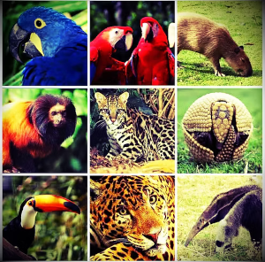

Benefícios
Imersão total na língua inglesa entre duas e quatro semanas para praticar e viver a cultura num país anglo-saxônico.
O turismo educacional promove o desenvolvimento do capital cultural.
A qualificação profissional internacional abre novos horizontes na divisão internacional do trabalho.
Aprendizados baseados em projetos
- Mercosul Trilíngue;
- Intercâmbio para todos;
- Observatório Internacional do Meio Ambiente.
Aprendizagem baseada em projetos (ABP) é uma das mais eficazes formas disponíveis de envolver os alunos com o conteúdo de aprendizagem e, por essa razão, é recomendada por muitos líderes educacionais como uma das melhores práticas educacionais na atualidade.
(BARELL, 2010; BARON, 2011; COLE; WASBURN MOSES, 2010; LARMER; MERGENDOLLER, 2010).
Saiba mais...Tenha experiência Internacional
A Cietcab promove a mobilidade estudantial e profissional no Brasil e no mundo!
Solicite uma consultoria em Educação Internacional
A Câmara Intercontinental de Educação acredita que o conhecimento é o escopo para o desenvolvimento sustentável e fortalecimento das nações.
